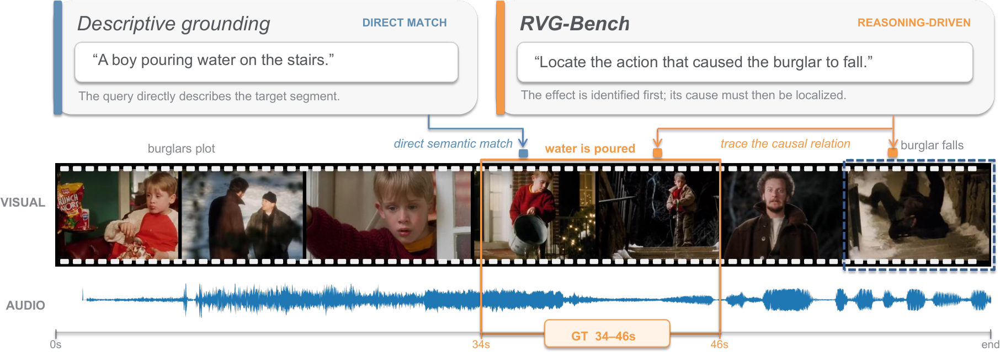

Abstract
Existing temporal video grounding (TVG) benchmarks primarily focus on localizing target video segments according to descriptive text queries of the visual content. However, real-world queries are more diverse and often require the model to first understand the user’s intent before localization, such as finding visual evidence, identifying the cause of an event, or recalling a remembered moment, yet such queries remain largely overlooked.
To mitigate this gap, we introduce RVG-Bench, a benchmark for reasoning-driven audio-visual temporal grounding, where every query is constructed such that the target segment can only be identified through reasoning about the query’s underlying intent. We carefully construct the benchmark and rigorously verify its data quality to ensure models truly comprehend the audio-visual content. RVG-Bench comprises 1,255 videos and 1,890 query-interval pairs across eight reasoning types.
We evaluate 18 models and find that even Gemini-3-Pro achieves only 44.4 mIoU. Through a series of controlled analyses, including oracle-grounding probes and test-time scaling experiments, we systematically examine where and why current models struggle, providing insights for future model development.
Overview
A query can describe an intent without naming the event. RVG-Bench asks a system to reason about what happened, resolve which event answers the query, and then localize it in time.


Example query: “Locate the action that caused the burglar to fall.” The model must recognize the outcome, trace its cause, and localize the earlier action.
Benchmark
RVG-Bench contains 1,255 videos and 1,890 query–interval pairs, covering eight single-step reasoning types and 302 multi-step queries.
- Intrinsic attributes
- Infer what an event implies: a character’s mental state, an unexpected occurrence, or a symbolic meaning. Includes character-centric, anomaly, and symbolic reasoning.
- Relative attributes
- Compare candidate moments or reason about their positions in a sequence to identify the target. Includes comparative and ordinal reasoning.
- Relations between events
- Follow causal, temporal, or referential connections from the event in the query to the target event. Includes causal, sequential, and referential reasoning.
Multi-step reasoning combines two or more of these operations within a single query.
Main Results
Evaluation of 18 models across eight single-step reasoning types and multi-step queries.
Scroll horizontally to view all columns.
| Model | S-Step | M-Step | Overall | |||||||||
|---|---|---|---|---|---|---|---|---|---|---|---|---|
| Caus | Seq | Ref | Char | Anom | Symb | Comp | Ord | Overall | mIoU | mIoU | IoU@0.3 | |
| Closed-source models | ||||||||||||
| Gemini-3-Pro | 31.3 | 63.5 | 44.4 | 34.6 | 41.4 | 51.0 | 68.3 | 45.1 | 46.1 | 35.8 | 44.4 | 61.1 |
| GPT-5.5 | 28.2 | 50.9 | 38.0 | 32.8 | 43.4 | 47.9 | 50.1 | 32.6 | 39.5 | 32.8 | 38.5 | 55.5 |
| Open-source omni models | ||||||||||||
| ChronusOmni | 13.1 | 37.3 | 13.8 | 24.2 | 22.7 | 26.0 | 41.6 | 26.2 | 25.0 | 15.7 | 23.4 | 33.4 |
| Qwen3-Omni | 11.1 | 15.2 | 9.8 | 10.6 | 4.6 | 14.5 | 23.7 | 9.5 | 12.2 | 2.8 | 10.7 | 14.4 |
| Qwen2.5-Omni | 5.1 | 7.1 | 5.8 | 5.1 | 6.1 | 7.3 | 8.1 | 2.9 | 5.8 | 1.4 | 5.1 | 7.3 |
| HumanOmniV2 | 3.2 | 5.5 | 9.7 | 3.2 | 8.3 | 10.5 | 7.5 | 6.1 | 6.1 | 0.3 | 5.1 | 7.1 |
| Ola-7B | 3.8 | 3.6 | 4.4 | 3.9 | 5.0 | 9.8 | 7.4 | 4.8 | 4.9 | 2.4 | 4.5 | 6.1 |
| MiniCPM-O-2.6 | 1.3 | 1.0 | 2.3 | 1.4 | 2.5 | 3.7 | 4.2 | 1.5 | 2.0 | 3.3 | 2.2 | 2.7 |
| Open-source VL models | ||||||||||||
| TimeLens-8B | 19.7 | 44.1 | 26.5 | 29.3 | 27.0 | 43.9 | 43.7 | 29.3 | 31.9 | 21.3 | 30.1 | 41.7 |
| Qwen3-VL-8B | 14.5 | 41.0 | 24.3 | 21.8 | 26.8 | 47.6 | 38.4 | 25.0 | 28.3 | 16.4 | 26.3 | 35.0 |
| TimeLens-7B | 13.0 | 33.9 | 16.8 | 21.2 | 20.5 | 35.5 | 35.6 | 20.0 | 23.5 | 13.1 | 21.8 | 31.1 |
| Time-R1-7B | 14.4 | 28.5 | 16.7 | 19.0 | 15.0 | 25.5 | 34.3 | 20.2 | 21.1 | 12.7 | 19.7 | 29.4 |
| TRACE | 12.7 | 18.2 | 12.6 | 13.7 | 6.0 | 21.1 | 25.2 | 12.4 | 14.9 | 10.1 | 14.1 | 20.8 |
| Qwen2.5-VL-7B | 11.2 | 21.7 | 13.5 | 12.6 | 9.2 | 18.2 | 24.8 | 16.3 | 15.6 | 2.3 | 13.4 | 20.4 |
| VideoChat-R1 | 16.4 | 11.5 | 10.7 | 11.4 | 8.2 | 17.3 | 17.1 | 10.5 | 13.0 | 6.6 | 11.9 | 17.4 |
| TimeSuite | 5.5 | 13.8 | 6.6 | 8.2 | 10.9 | 15.1 | 20.5 | 9.4 | 10.6 | 3.6 | 9.4 | 13.8 |
| Video-R1-7B | 7.0 | 8.1 | 7.9 | 4.1 | 6.9 | 11.9 | 9.7 | 5.0 | 7.3 | 1.8 | 6.4 | 9.3 |
| MiMo-VL-7B-RL | 2.6 | 0.8 | 3.2 | 2.0 | 1.3 | 3.5 | 2.3 | 1.1 | 2.0 | 0.2 | 1.7 | 2.4 |
| Human reference (200-example audit subset) | ||||||||||||
| Human baseline | 63.9 | 85.6 | 71.7 | 58.8 | 56.6 | 74.2 | 69.4 | 67.9 | 68.5 | 52.4 | 65.3 | 78.5 |
Metrics. S-Step and M-Step denote single- and multi-step reasoning. All values are percentages; every column reports mIoU except IoU@0.3 (recall at IoU ≥ 0.3). Higher is better. Overall scores are sample-count-weighted.
Types. Caus: causal; Seq: sequential; Ref: referential; Char: character-centric; Anom: contextual anomaly; Symb: symbolic; Comp: comparative; Ord: ordinal.
GPT-5.5. Scores use the same fixed intersection of 1,699 samples not blocked by the provider across Direct, CoT, Ground, and 2-step. Samples outside this intersection are excluded from each setting.
Human reference. Two annotators independently evaluate a separate stratified subset of 200 queries: 20 per single-step type and 40 multi-step. Their IoUs with the ground truth are averaged per query before aggregation.